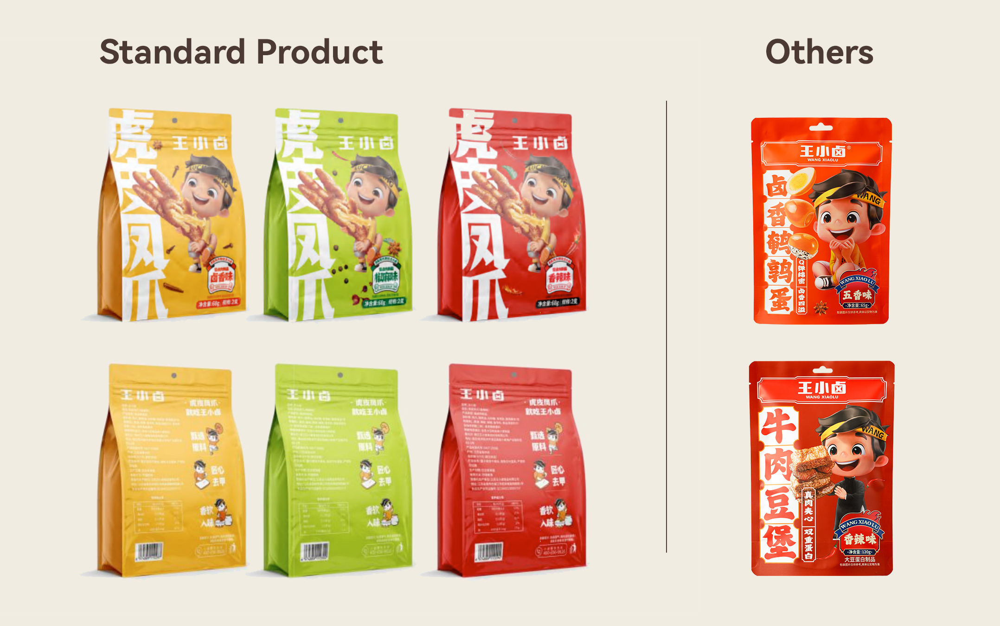
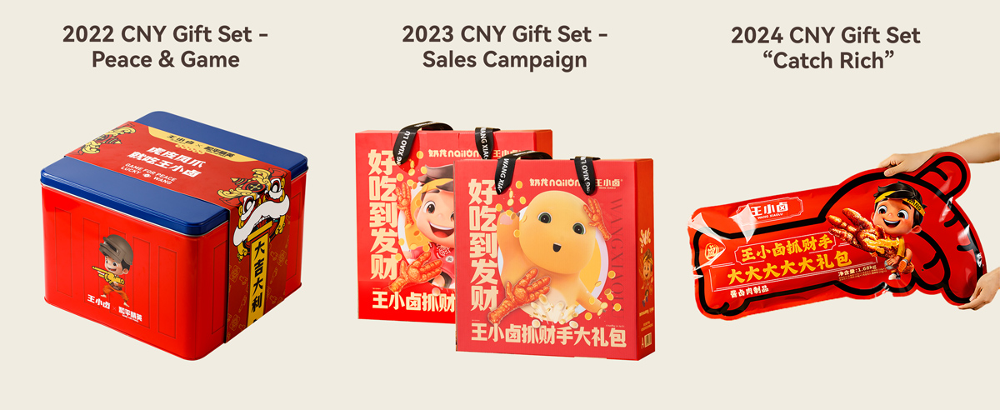

Use customer understanding to guide a full packaging upgrade.
In 2023, an external research team helped Wang Xiaolu build a clearer picture of its core consumers and their usage occasions. The key audience was under 40, with strong representation from young families, urban professionals, Gen Z and younger consumers in lower-tier cities.
The common thread was leisure: these consumers were buying snacks for relaxed, everyday moments. That insight became the foundation for a broader packaging refresh.
Protect the brand asset while making the product easier to understand.
Keep the recognisable IP character
The existing boy character already created warmth, familiarity and strong shelf differentiation. Removing or dramatically reducing it would have weakened a valuable brand asset.
Increase food visibility
The previous packaging made the product itself too difficult to identify at first glance. After several rounds of discussion, the visual balance between the food and the IP character was adjusted to roughly 1:1.
Improve information hierarchy
Typography was rebuilt for stronger readability, while category naming moved to the side panel. The goal was to keep the packaging expressive without sacrificing immediate product recognition.
Turn one redesign into a flexible product-family language.
Once the core composition was established, the system was adapted by product line and flavour. Retro-influenced ranges, younger audience segments and experimental D2C launches could all shift in colour and detail while retaining the same recognisable structure.

Initial market feedback was encouraging: the redesign did not trigger significant complaints about perceived product changes, and fast-moving channels such as Douyin produced more positive reactions. Because these observations were not collected through a formal research framework, they are treated as directional rather than definitive evidence.
Extend the packaging language into seasonal and IP-led gift formats.
After the core visual language became more stable, the team applied it to several Chinese New Year collaborations and promotional gift sets.

Visual improvement needs a better feedback loop.
The packaging work received positive feedback from sales teams and internal stakeholders, but the evaluation remained largely qualitative. Without a structured route for end-consumer feedback, it was difficult to measure the redesign beyond internal confidence and channel reactions.
A stronger next step would be to connect packaging decisions with structured consumer surveys, so visual changes can be evaluated with evidence rather than perception alone.